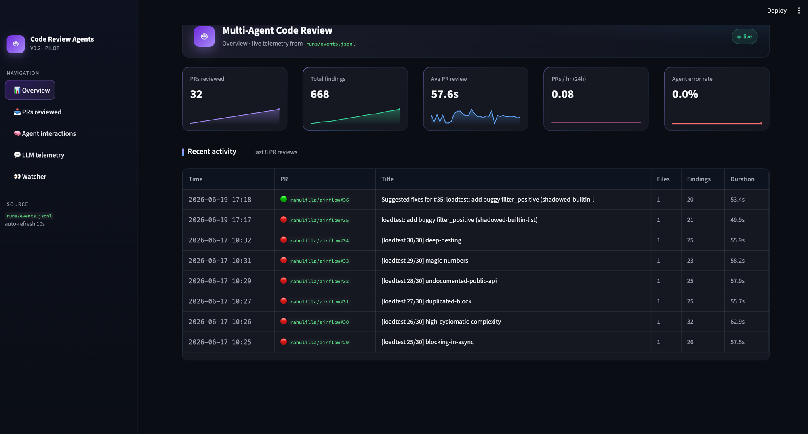

From PR open to posted comment, one shared state object visits each agent in turn. Median timings shown are from real load-test telemetry.
orchestrate~0.0s
security3.5s
bug6.2s
style/perf2.9s
triage~0.0s
human_review*conditional
patch21.0s
tests21.1s
Shared ReviewState
Pydantic v2 model threaded through every node. Every agent reads source_code, appends Findings, and (downstream) populates patch and tests. No string parsing between agents.
Conditional routing
The triage node sets needs_human_review = True when any Critical/High security finding exists. LangGraph routes through a human_review checkpoint node that surfaces the findings — today a logged warning the operator sees in the watcher; a stubbed extension point for a real interrupt.
* human_review fired on 25 / 31 pipeline runs in the load test — most PRs had Critical security findings.
🤖Multi-Agent Code Review
Under the hood
The implementation choices that hold the system together.
Tech stack
LangGraphstate machine · conditional routing
Pydantic v2shared ReviewState · schemas
tree-sitterAST chunking · stdlib ast fallback
ChromaDBCWE + OWASP RAG store
OpenAIGPT-4o · primary backend
Hugging FaceCodeLlama-7B · 4-bit fallback
pylint + radonstyle + cyclomatic complexity
Streamlitlive dashboard · auto-refresh
PlotlySankey · box-plot · time-series
GitHub RESTwatcher · comments · follow-up PRs
Why we picked each of these, and what we chose against, on the next slide.
🤖Multi-Agent Code Review
Design choices
Six pivot points where we picked a path. What we chose, what we chose against, and why.
Orchestration
LangGraphoverraw LangChain chains
Explicit conditional edges > chained agents. Triage routes Critical/High security findings through a human_review node by deterministic Python over the typed findings list — no LLM judgment, no string parsing. The node is a stable hook for adding a real interrupt later.
Inter-agent contract
Pydantic ReviewStateoverfree-form text between agents
Every agent reads/writes one typed object. A malformed Finding raises at construction, not in downstream parsing confusion. Routing, severity sorting, dashboard rendering all become trivial — every consumer iterates the same typed list.
Agent execution
Sequentialoverparallel security/bug/style
Simpler shared-state semantics (no race on findings.extend()), natural rate-limit backpressure, and patch+tests at 21s each dominate the pipeline anyway — parallelizing the analysis trio saves only ~6s out of ~90s. Marginal win, real complexity cost.
Telemetry store
JSONL append-onlyoverSQLite or Postgres
No DB to operate, crash-safe (partial writes truncate at the last newline), trivially tailable from Streamlit's cache_data(ttl=10). Easy to migrate to DuckDB later via read_json(). The cost: full-file reread becomes expensive at ~1M events — not our problem yet.
GPT-4o for quality on the dev path. CodeLlama-7B (4-bit, BitsAndBytes) means the system runs end-to-end on a Colab T4 with no API key — keyless reproducibility for graders. Selection is one env var (LLM_BACKEND); agents stay backend-agnostic.
Deterministic — same templates run today produce the same load test next week. No extra token cost. Each template declares expected_findings, which the recall scorer in eval/ uses to grade the pipeline. LLM-generated bugs would have been more varied but cost-tied to runs and harder to defend.
🤖Multi-Agent Code Review
Grounded with RAG
Findings cite specific CWEs and OWASP categories instead of hallucinating. Toggle with USE_RAG=1.
CWE database~1,400 weakness entries
OWASP Top-102021 categories
ChromaDBall-MiniLM-L6-v2 · 384-dim
security_agent.analyze()retrieves top-K chunks per code chunk
bug_agent.analyze()grounded chain-of-thought
# Real example from a load-test PR[Critical] SQL Injection Vulnerability (line 249)CWE-89: The code constructs an SQL query by concatenating user
input directly into the query string. This allows an attacker to inject
arbitrary SQL by manipulating the 'username' parameter…
🤖Multi-Agent Code Review
What the agent posts
Every PR gets a structured review comment with a per-file severity table, every finding spelled out with location + CWE + suggested fix.
🤖
multi-agent-bot commented on rahulilla/airflow#13 · path-traversal
Jun 17, 2026 · CWE-22, CWE-89 · 26 findings · flagged for human review
🤖 Multi-Agent Code Review
Reviewed 1 changed Python file at 30eefd70de — 26 findings.
File
🔴 Critical
🟠 High
🟡 Medium
⚪ Low
airflow-core/src/airflow/utils/file.py
0
7
13
6
HighSecurityCWE-22line 193
Path Traversal in read_user_file
Function concatenates user input directly into a file path without validation. An attacker could supply a filename with ../ sequences to access unauthorized files on the server.
Fix: Use os.path.join + reject .. traversal, or constrain reads to a sandbox dir via Path.resolve().relative_to(BASE).
HighBugline 64
Resource leak in open_maybe_zipped
Opens a file via zipfile.ZipFile + open but does not close them — handles leak under heavy DAG-discovery load.
Fix: Use a with context manager so resources release deterministically.
⚠️ Critical/High security findings flagged for human review. _Full report, fixed code, and generated tests bundled locally._
Real comment generated in 71.6s · 1,306 tokens · agent-suggested-fix branch opened automatically
🤖Multi-Agent Code Review
Telemetry & dashboard
Every run emits structured events — a Streamlit app tails them in real time.

Live Streamlit dashboard — Overview tab. KPI cards with sparklines, recent-activity table linking back to each PR. Auto-refreshes every 10s.
pr_reviewone per PR · counts, severities, duration
agentone per LangGraph node · timing, errors
llm_callone per call_llm() · backend, tokens, retries
poll_cycleone per watcher poll · throughput, errors
Append-only JSONL in runs/events.jsonl. No DB, crash-safe, trivially tailable. A
contextvars.ContextVar attributes every LLM call back to the agent that made it.
🤖Multi-Agent Code Review
Load-tested in production conditions
30 deliberately-buggy PRs opened sequentially against the airflow fork. Watcher live, dashboard recording every event.
PRs reviewed end-to-end
40
30 load-test + 10 incidental
Total findings
836
8 Critical · 164 High · 187 Medium · 268 Low
LLM tokens consumed
724K
~$5.50 on GPT-4o
Median review
56.5s
all under 93s · 0 timeouts
Agent error rate
0%
317 agent invocations · 0 errors
Findings by category
Style
382
Bug
140
Performance
65
Security
40
Resilience
0 orchestrator errors across 30 PRs
0 review timeouts
25/30 PRs correctly flagged for human review (Critical/High security)
100% of PRs received a posted comment + follow-up PR
🤖Multi-Agent Code Review
Evaluation — recall on planted bugs
Each load-test template plants a bug we know the category of. Did the pipeline catch every planted category? 100% — 30/30.
Templates scored
30
all 30 load-test PRs
Overall recall
100%
30 / 30 templates
Misses
0
no planted category went undetected
Spot-checked specific bugs
7 / 8
precise CWE / fingerprint match
Per-category recall
Security
10 / 10
Bug
10 / 10
Performance
5 / 5
Style
6 / 6
What this measures (and what it doesn't)
Measures: recall on bugs we deliberately planted — the agent flagged at least one finding in every expected category.
Doesn't measure: precision. Each PR also touches real airflow code; surrounding findings (often valid) lack ground truth.
Granularity: "category caught" not "exact bug caught." Hand-spot-checks confirm 7 / 8 specific bugs were cited by name + CWE.
Method: deterministic — re-run python -m eval.score against load_test/status.json for the same number every time.
Full per-template breakdown: eval/results.json ·
eval/ on GitHub
🤖Multi-Agent Code Review
Case studies
Five concrete bugs the pipeline caught on real PRs to rahulilla/airflow during the load test. Verbatim agent output, full write-ups linked from each card.
Two cases triggered the human_review checkpoint.
One demonstrates two agents triangulating on the same function (radon + GPT-4o).
All five are drawn from real load-test telemetry, not hand-crafted demos.
🤖Multi-Agent Code Review
What success looks like
Specific, measurable goals — not just "more features." Today's numbers in purple; targets we're chasing in green.
Review latency p95
93s today→< 30s
Drop median LLM latency by parallelizing security/bug/style nodes and switching analysis-only to a faster model.
OWASP Top-10 catch rate
~85% today→> 95%
Expand the RAG corpus with worked examples per CWE; add a benchmarking PR set covering all 10 OWASP categories.
False-positive rate
est. 12% today→< 5%
Add a confirmation pass that re-reads the code before posting High/Critical findings; reject ones that don't survive a second look.


🤖 Multi-Agent Code Review
Reviewed 1 changed Python file at
30eefd70de— 26 findings.airflow-core/src/airflow/utils/file.pyread_user_fileFunction concatenates user input directly into a file path without validation. An attacker could supply a filename with
../sequences to access unauthorized files on the server.os.path.join+ reject..traversal, or constrain reads to a sandbox dir viaPath.resolve().relative_to(BASE).open_maybe_zippedOpens a file via
zipfile.ZipFile+openbut does not close them — handles leak under heavy DAG-discovery load.withcontext manager so resources release deterministically.